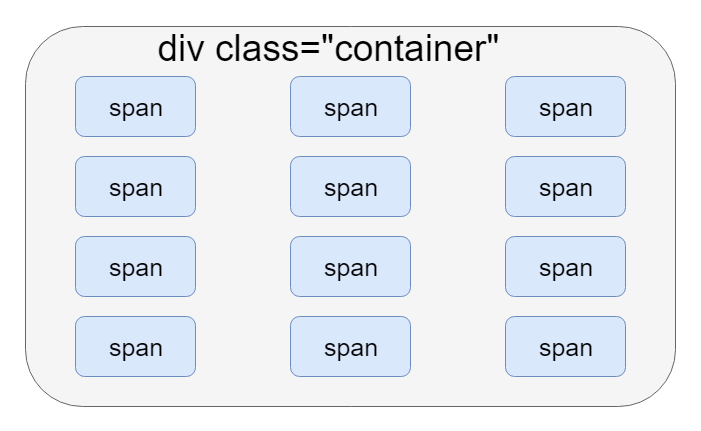

Мы рассмотрели структурную составляющую DOM модели, но в ней остался ещё большой неразведанный пласт - события.
С помощью событий строится вся интерактивность между пользователем и документом. Но они используются не только для этого. В DOM сокрыто по настоящему огромное количество разнообразных событий, многие из которых используются не для взаимодействия с пользователем, а для общения разных программных компонентов и системных уведомлений.
Вообще, сами по себе, события - это какие-то штуки, происходящие с HTML элементами. Потенциально, любое изменение состояния системы может вызывать событие.
Некоторые события генерируются в результате действий пользователя, некоторые в результате действий браузера, некоторые ещё каким-нибудь образом.
Вот несколько примеров событий:
Ну и главное, что позволяет делать API событий - это определять, какие программные действия должны выполняться при происхождении того или иного события.
К любому DOM событию можно привязать Javascript функцию, которая будет выполняться при происхождении этого события.
Я насчитал +- 262 события, присутствующих в настоящий момент в JS.
Полный их перечень можно посмотреть на MDN (но лучше не надо).
На самом деле событий так много, потому что среди них куча очень специфических событий, относящихся к какому-то узконаправленному компоненту Веб API.
Например, есть такие категории событий:
Основных используемых событий не так уж и много.
Вот некоторые типы основных событий:
На самом деле, самое главное событие всего одно, и мы его уже знаем - это событие click.
Вот парочка событий, которые применяются наиболее часто:
| Событие | Описание |
|---|---|
| click | Клик мышкой |
| DOMContentLoaded | Загрузка всего DOM дерева |
| mouseover | Наведение курсора мыши на элемент |
| mouseout | Выход курсора мыши за пределы элемента |
| keydown | Нажатие клавиши на клавиатуре |
| change | Изменение значения в элементе управления |
Обработчик события - обычная функция, которая будет выполняться по происшествию какого-либо события.
И существует 3 способа, как назначить событию обработчик.
Для многих базовых DOM событий у HTML элементов есть подготовленные атрибуты для привязки обработчиков событий.
Этим способом в качестве обработчика события привязывается не функция, а просто JS код.
Атрибуты называются по имени события + приставка "on". Атрибут для обработчика события click - onclick, атрибут для обработчика события change - onchange, для события load - onload и т.д.
Подобные атрибуты есть не для всех событий, поэтому нужно быть внимательными.
В этот атрибут просто записывается Javascript код, взятый в кавычки.
<body onload="let a = document.body.createElement('div'); document.body.appendChild(a);">
<button onclick="this.innerHTML = Date()">The time is?</button>
<img src="imag1.png" onmouseover="console.log('mouse over img')"/>
</body>
<!-- Это работать не будет! -->
<div onclick="myFunctionName" />
<!-- Этим способом нужно прописывать не имя функции-обработчика, а сами действия - вызов -->
<div onclick="myFunctionName()" />
Второй способ уже совершается через JS.
Для того, чтобы привязать обработчик, необходимо получить объект нужного элемента страницы. И далее, у элемента можно обратиться к свойству с таким же названием, как у атрибутов из прошлого варианта.
Для события click будет свойство element.onclick, для события keydown - свойство element.onkeydown и т.д.
И в это свойство нужно просто записать функцию-обработчик.
element.onevent = function handler() { };
И, как и в предыдущем случае, нужно учитывать, что не для всех событий в JS есть встроенные свойства.
// Событие click
let div = document.getElementsByTagName("div");
div.onclick = function() {
console.log("Click-clack!");
};
// Событие mouseover
function myAction() {
console.log("mouse over event!");
}
// Здесь уже идёт присваивание именно самой функции
div.onmouseover = myAction;
// Запись с вызовом работать не будет:
div.onmouseover = myAction(); // div.onmouseover = undefined
// Событие copy
div.oncopy = () => console.log("Don't copy code!!!");
У такого способа назначения обработчика есть один большой недостаток - с помощью свойства можно назначать только один обработчик.
Если у элемента свойством задан уже какой-то обработчик, то повторное назначение обработчика не добавит второй, а перезапишет первый оригинальный.
div.onclick = function () {
console.log("Click handler 1");
};
// Первый обработчик сотрётся
div.onclick = function () {
console.log("Click handler 2");
};
div.click(); // Click handler 2
И наконец, самый универсальный и функциональный вариант - добавление обработчика через метод addEventListener.
С помощью этого метода можно добавить обработчик на любое событие и в любых количествах.
addEventListener("eventName", Function);
Метод принимает 2 обязательных параметра: строку с названием события и саму функцию-обработчик.
Можно использовать имя ранее описанной функции, можно создавать анонимную прямо здесь, без разницы.
С помощью addEventListener() можно добавить одновременно несколько обработчиков одного и того же события для одного элемента:
div.addEventListener("click", function() {
console.log("Click handler 1");
});
div.addEventListener("click", function() {
console.log("Click handler 2");
});
div.addEventListener("click", function() {
console.log("Click handler 3");
});
div.click(); // Click handler 1, Click handler 2, Click handler 3
Порядок их вызова определяется порядком назначения.
Обработчик, добавленный через HTML атрибут, удаляется посредством обнуления значения атрибута.
Обработчик, добавленный через JS свойство, удаляется посредством обнуления значения свойства.
А обработчик, добавленный с помощью метода addEventListener(), удаляется при помощи метода removeEventListener();
Метод removeEventListener() вызывается аналогично методу для добавления, с таким же набором параметров.
Это значит, что для удаления обработчика, нужно иметь ссылку на назначенную функцию, или, проще говоря, у функции должно быть имя.
Удаление происходит следующим образом:
function clickHandler() {
console.log("You click on me");
}
// Добавили обработчик clickHandler
div.addEventListner("click", clickHandler);
// Через 10 секунд...
setTimeout(function() {
// Сняли обработчик clickHandler
div.removeEventListener("click", clickHandler);
}, 10000);
// Вот такой обработчик нельзя удалить (простым способом)
div.addEventListener("mouseover", function() {
console.log("I'am immortal, mwha-ha-how!");
});
// Чтобы можно было удалить, у функции должно быть имя
div.addEventListener("mouseout", function onMouseOut() {
console.log("But not me...");
});
Мы раньше упомянули, что события бывают разных типов. Например, события мыши, события клавиатуры, события буфера обмена и т.д.
Разные источники их проявления - это не единственные отличия между ними.
Все функции-обработчики событий могут принимать один параметр - аргументы события. И у разных типов событий эти аргументы различаются. У всех событий мыши туда приходит один объект, у всех событий клавиатуры другой объект, и т.д. Для каждого типа событий свои особенные параметры.
Что вообще такое аргументы события? Это просто объект, который содержит всякую дополнительную полезную информацию о произошедшем событии.
Для событий мыши там содержится информация, специфичная для мыши. Например, координаты курсора, или информация о том, какая из клавиш мыши была нажата.
Для событий клавиатуры там содержится другая, своя информация: на какую клавишу было совершено нажатие, были ли в этот момент зажаты клавиши-модификаторы и т.д.
Аргументы события передаются в обработчики событий в виде единственного параметра функции.
Обычно этот параметр называют просто e.
element.addEventListener("click", function(e) {
console.log("Mouse Event Arguments: " + e);
});
Любая функция-обработчик события может принимать такой параметр, для использования в своей логике аргументов произошедшего события.
В аргументы событий мыши передаётся объект MouseEvent, который имеет массу полезных свойств, характеризующих поведение мыши:
которых нет
Объект KeyboardEvent содержит следующие полезные свойства:
А большего и не надо.
которых нет
Это очень интересная тема, связанная со вложенной структурой интерфейса, и затрагивающая принципы работы всех событий, происходящих с элементами интерфейса страницы.
Обработчик событий можно повесить на любой элемент на HTML странице.
Представьте, что элементу body назначен какой-то обработчик события click. А внутри него на странице есть кнопка, которой тоже назначен обработчик события click.
Как тогда будут себя вести обработчики, если пользователь нажмёт на кнопку, которая внутри body? Ведь по сути, он в то же время нажмёт и на само body...
Или возьмём, например, событие перемещения мыши mousemove.
Когда пользователь двигаем мышью над картинкой img, находящейся внутри div-а, находящегося внутри section-а, находящегося внутри main.
Над каким элементом он на самом деле двигает мышью?
Над всеми сразу? Отчасти, это верный ответ.
Жизненный цикл события элемента интерфейса состоит из 3 фаз:
Каждое событие (практически), будь то клик, движение мышью или нажатие клавиши, проходит все эти три фазы.
Можно считать, что жизненные фазы события определяют порядок выполнения обработчиков события.
На первой фазе погружения (перехвата) происходит поиск и выполнение обработчиков для произошедшего события, сверху вниз по элементами DOM дерева, от Window до целевого элемента, на который было произведено нажатие, среди обработчиков фазы погружения.
На второй фазе цели вызываются обработчики целевого элемента события.
На третей фазе всплытия ищутся и вызываются обработчики по направлению снизу вверх от целевого элемента до объекта Window. Здесь используются обработчики фазы всплытия.
По умолчанию, все обработчики событий создаются для третей фазы, фазы всплытия.
Это определяется третьим параметром функции addEventListener(), значение по умолчанию для которого равно false.
Чтобы зарегистрировать обработчик события для первой фазы, фазы погружения, нужно передать в качестве третьего параметра значение true.
// Регистрация обработчика для фазы погружения
element.addEventListener("event", Function, true);
// Регистрация обработчика для фазы всплытия
element.addEventListener("event", Function);
element.addEventListener("event", Function, false);
document.addEventListener("click", function() {
console.log("1");
}, true);
main.addEventListener("click", function() {
console.log("2");
}, true);
span.addEventListener("click", function() {
console.log("3");
});
main.addEventListener("click", function() {
console.log("4");
});
document.addEventListener("click", function() {
console.log("5");
});
<!DOCTYPE html>
<html lang="en">
<head>
<meta charset="UTF-8">
<title>Document</title>
</head>
<body>
<main>
<ul id="list">
<li>
<span>Первый пункт</span>
</li>
<li>
<span>Второй пункт</span>
</li>
<li>
<span>Третий пункт</span>
</li>
<li>
<span>Четвёртый пункт</span>
</li>
</ul>
</main>
</body>
</html>
let list = document.getElementById("list");
list.addEventListener("click", function() {
console.log("A");
});
document.body.addEventListener("click", function() {
console.log("B");
}, true);
let secondListItem = document.querySelector("#list > li:nth-child(2)");
secondListItem.addEventListener("click", function() {
console.log("C");
}, true);
let thirdSpan = document.querySelector("#list > li:nth-child(3) > span");
thirdSpan.addEventListener("click", function() {
console.log("D");
});
В объекте аргументов события есть свойство target, которое хранит ссылку на целевой элемент события, т.е. самый вложенный, конечный элемент, для которого происходит событие, и который будет участвовать в целевой фазе.
Также есть свойство path, в котором хранится массив из всех элементов, через которые проходит событие (т.е. все элементы, участвующие в фазах погружения и всплытия), начиная от Window, document, html, body, и до целевого элемента target.
А информацию о текущей фазе можно узнать из свойства eventPhase.
Для того, чтобы прекратить дальнейшее продвижение события, в объекте аргументов события есть 2 метода:
Вызвав в обработчике метод e.stopPropagation() можно остановить продвижение события по всем оставшимся элементам.
Это довольно часто бывает полезно, когда требуется как-либо ограничить выполнение обработчика. Если остановить продвижение события в обработчике, вызывающемся самым первым, то все остальные обработчики этого события не будут вызваны.
Метод stopPropagation() останавливает продвижение события ко всем последующим элементам DOM дерева, но для текущего узла все обработчики будут выполнены, если их здесь несколько.
Чтобы полностью прекратить выполнение всех последующих обработчиков, включая обработчики текущего узла, используется метод stopImmediatePropagation().
После вызова метода stopImmediatePropagation() гарантированно не будет вызвано больше ни одного обработчика для данного события.
Для многих событий на разных элементах интерфейса прописано стандартное поведение, например, при нажатии (событие click) на ссылку, должен осуществляться переход по ней; при нажатии на текстовое поле в это текстовое поле должен переходить фокус и появляться каретка ввода; при нажатии клавиши на клавиатуре (событие keypress), когда там находится фокус, должен происходить ввод нажатого символа в текстовое содержимое элемента.
Всё это является действиями по умолчанию для конкретных элементов и событий.
И это стандартное поведение можно заблокировать, вызвав внутри обработчика метод e.preventDefault().
preventDefault() - метод из объекта аргументов события (е), с помощью которого можно отключить действие по умолчанию для текущего события.
Например, если мы не хотим, чтобы при клике на ссылку происходил переход на другую страницу, то нужно в обработчике вызвать этот метод:
const a = document.getElementById("link");
a.addEventListener("click", function(e) {
console.log("click");
e.preventDefault();
});
Если повесить обработчик на контейнерный элемент, внутри которого содержится много дочерних элементов, то с помощью свойства target можно будет определить, для какого именно из внутренних элементов этого контейнера произошло событие.
Всегда лучше иметь один обработчик, чем десять.
Такой приём называется Делегирование событий.
Если нескольким элементам нужен одинаковый обработчик, то нужно использовать делегирование. Т.е привязать обработчик к их общему родителю, и обращаться к нажатому элементу с помощью свойства target.
Но если в родительском элементе есть что-то ещё, кроме элементов, для которых нужно обрабатывать событие - какие-то другие элементы, или просто пустые отступы, то нужно добавлять проверку, что target - это именно то, что нужно.
Если посмотреть на предыдущую картинку, то при нажатии на сам span - в target будет записан именно span, на которой было произведено нажатие.
Но если кликнуть на свободную область между span-ами, то target будет указывать на родительский div.
See the Pen Random circles by Pavel (@ParadoxMaster) on CodePen.
Можно создавать собственные события для своих нужд.
Это позволяет реализовывать в JS приложении паттерн проектирования Издатель-подписчик.
Т.е. в одном месте программы мы можем генерировать событие, и в другой части программы назначать обработчики на это событие.
// Создаём событие
let event = new Event("build");
// Назначаем обработчик
elem.addEventListener("build", function(e) { console.log("My own Event!") });
// Генерация события - вызываем обработчики
elem.dispatchEvent(event);
Вообще, с помощью конструктора Event можно программно генерировать любые события: пользовательские и стандартные.
// Стандартное событие клика мышкой
let programClick = new Event("click");
button.dispatchEvent(programClick);
// Стандартное событие нажатия клавиши
let programKeydown = new Event("keydown");
textArea.dispatchEvent(programKeydown);
// Стандартное событие загрузки ресурса
let programLoad = new Event("load");
fileInput.dispatchEvent(programLoad);
// Пользовательское событие
let myEvent = new Event("pigeon-fly");
div.dispatchEvent(myEvent);
Объект, создающийся в результате вызова конструктора new Event() является объектом аргументов события - это тот объект, который приходит параметром в обработчики.
Поэтому при программной генерации события его можно программно заполнять вспомогательной информацией.
Помимо базового конструктора Event есть объекты и для более специфичных событий:
const e = new MouseEvent("click", {
bubbles: true,
cancelable: true,
clientX: 100,
clientY: 100,
x: 100,
y: 100,
which: 0
});
В стандартные объекты Event можно записывать только стандартные свойства, их нельзя дополнять своими данными.
Если в аргументах события нужно передавать какую-то дополнительную информацию, то на помощь приходят собственные типы событий: CustomEvent.
Объект CustomEvent содержит свойство detail, в которое вы можете записать всё, что захотите.
const event = new CustomEvent('build', {
'detail': {
'time': new Date(),
'strength': 10
}
});
function eventHandler(e) {
console.log('The Event was triggered by: ' + e.target);
console.log('Event creation time is: ' + e.detail);
}
div.addEventListener('build', eventHandler);
div.dispatchEvent(event);
See the Pen Coin stack by Pavel (@ParadoxMaster) on CodePen.